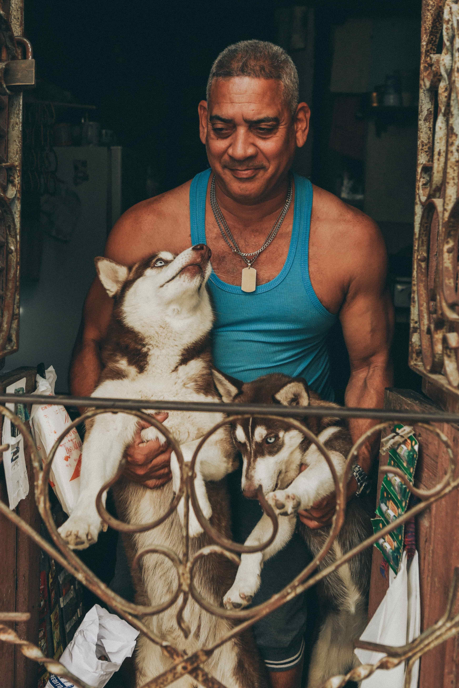

Target Audience
Anyone who wants to check the weather for daily life and event planning purposes
- Reason
- Age Group
- Education and Economic Status
Check the weather for trips, daily commutes, safety, and activities for your day.
Recommended age to use site would be Ages 8+.
All people who understand to read weather and have access to the internet
Personas
Persona 1: Tim
- 50 years old
- Businessman for 30 years
- Married and has kids
- Commutes daily, loves outdoor activities, camping, hiking, etc
Persona 2: John
- 65 years old
- Single Man
- Retired from the Military
- Loves to walk his dogs, bicycling
Scenarios
- Is the site easily accessibly and viewable?
- Why is Dream Weather differnt from other sites?
- What locations are included?
- Are there maps available on the site?
- Why is weather important?
Yes website can be viewed on many different devices from computer to smart phone and with low data use when traveling and it is free to use.
Dream weather provides updated information and easy to navigate. No need to look for the town you need.
At this moment the webstie will include Preston, Soda Springs, and Fish Haven of Eastern Idado. Plan to expand in the future.
We also provide a map view of the town that you are searching the weather for.
Weather allows us to plan activities and enjoy the time that we have each day.